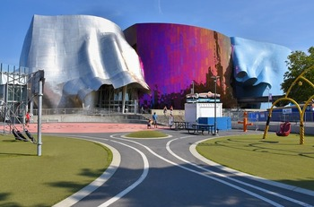

The musuem of pop culture, or MoPop, is not as distinct of a tourist destination. But I have strong personal bias towards it as it is one of my favorite places in Seattle. The musuem has several different exhibits ranging from used props in fantasy and horror films, to a video game lab. There is always a changing exhibit which makes returning a little bit new each time. Music has a strong emphasis with the famous guitar structure and exhibits.The shocking architecture and interesting exhibits make the MoPop stand out in the musuem world.
